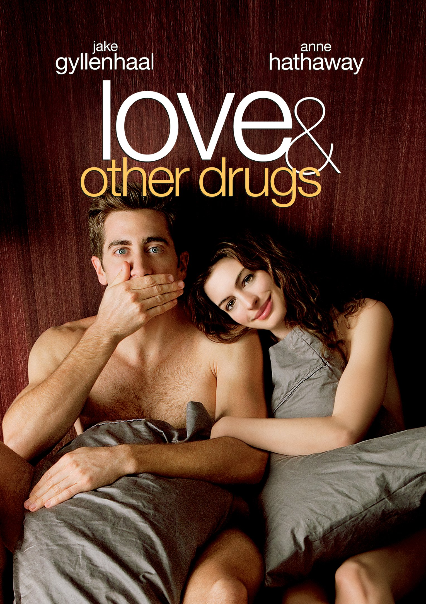
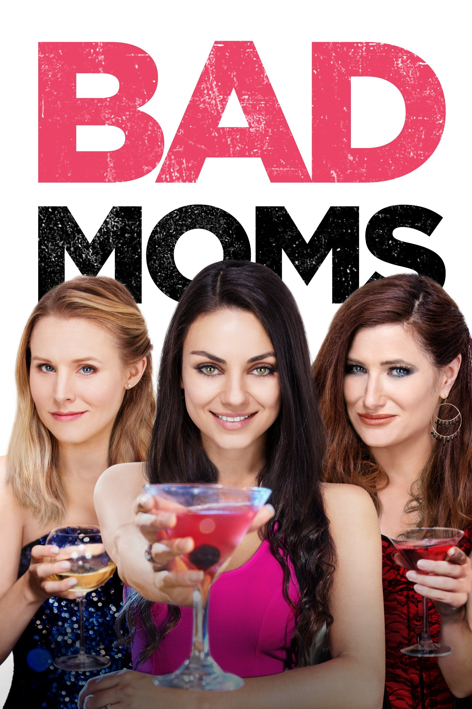
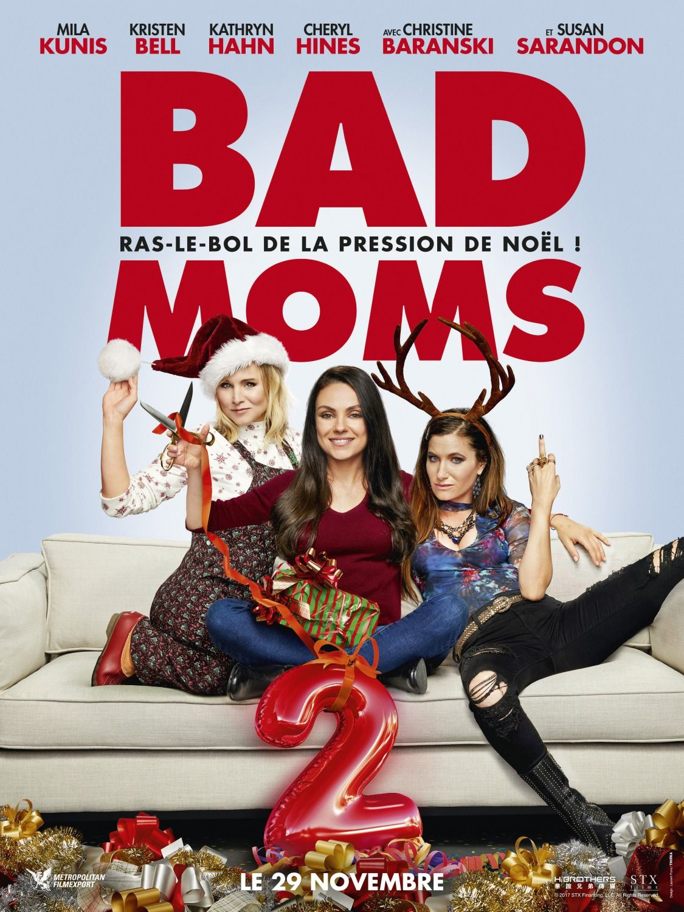
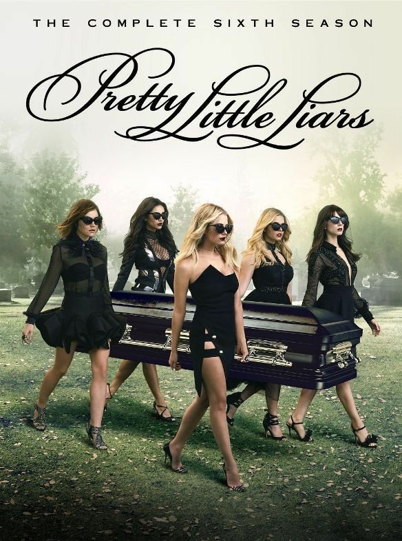
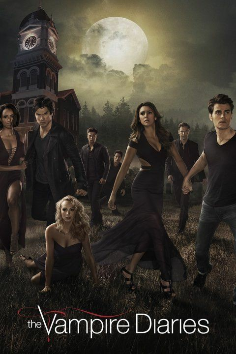
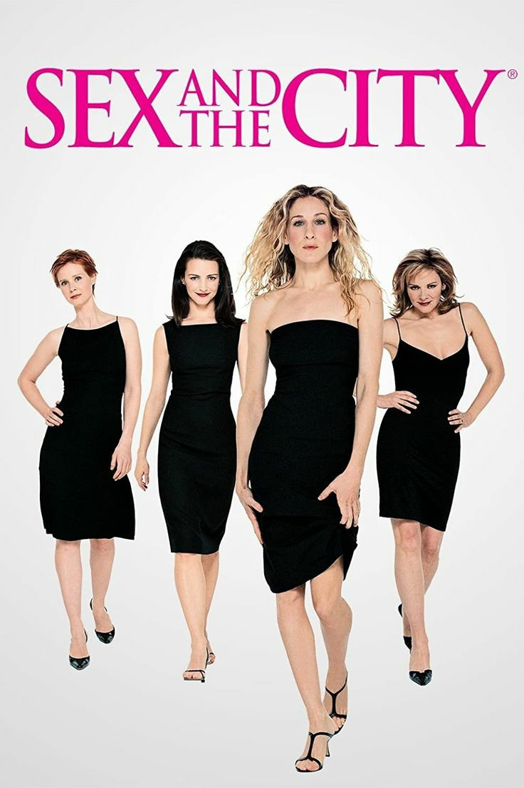
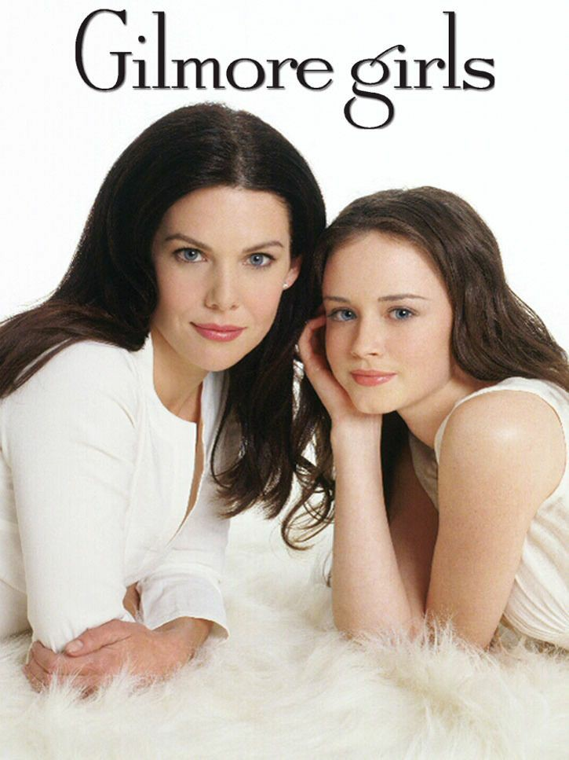
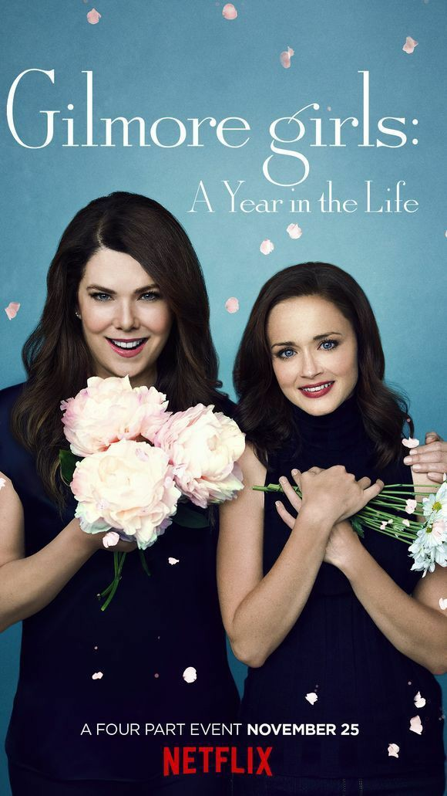

MOVIES TIME!!
Hello! This page is to help those who are undecided on which movies or series to choose to watch.
Movies

Red Notice
Favorites
Action and adventure, Comedy, Police movie | 2021 | 1h 57min
Dangerous Lies
Favorites
Thriller | 2020 | 1h 37min
6 Underground
Favorites
Action and adventure | 2019 | 2h 8min

Love & Other Drugs
Favorites
Comedy, Romance, Drama | 2010 | 1h 52min
The Intern
Favorites
Comedy | 2015 | 2h 1min
The Tourist
Favorites
Mystery, Action and adventure, Police movie, Romance | 2010 | 1h 43min
Murder Mystery
Favorites
Mystery, Comedy | 2019 | 1h 37min

Dirty Grandpa
Favorites
Comedy | 2016 | 1h 41min

Bad Moms
Favorites
Comedy | 2016 | 1h 40min

Bad Moms 2
Favorites
Comedy | 2016 | 1h 40min
Series

Gossip Girl
Favorites
Drama, Romance | 2007 | 6 seasons | 121 episodes

Pretty Little Liars
Favorites
Thriller, Mistery, Drama | 2010 | 7 seasons | 160 episodes

The Originals
Favorites
Drama, Action, Romance | 2013 | 5 seasons | 92 episodes

The Vampire Diaries
Favorites
Drama, Action, Romance | 2009 | 8 seasons| 171 episodes

Teen Wolf
Favorites
Drama, Action, Romance | 2011 | 6 seasons | 100 episodes

Beauty and the Beast
Favorites
Drama, Action, Romance | 2012 | 4 seasons | 70 episodes
Reign
Favorites
History Drama | 2013 | 4 seasons | 78 episodes

Sex and the City
Favorites
Comedy, Romance, Drama | 1998 | 6 seasons | 94 episodes

Gilmore Girls
Favorites
Comedy, Romance, Drama | 2000 | 7 seasons | 153 episodes

Gilmore Girls: A Year in the Life
Favorites
Comedy, Romance, Drama | 2016 | 1 seasons | 4 episodes